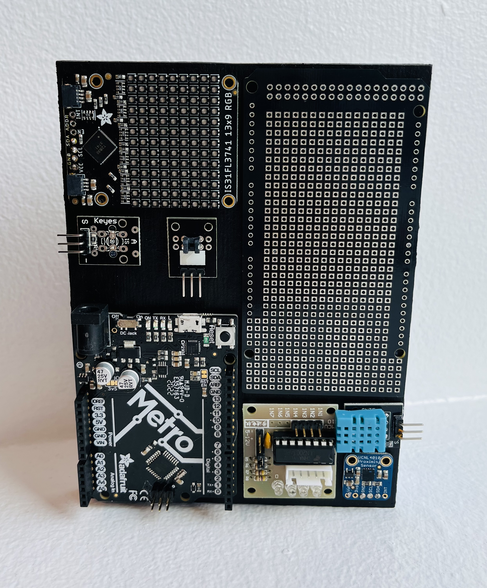
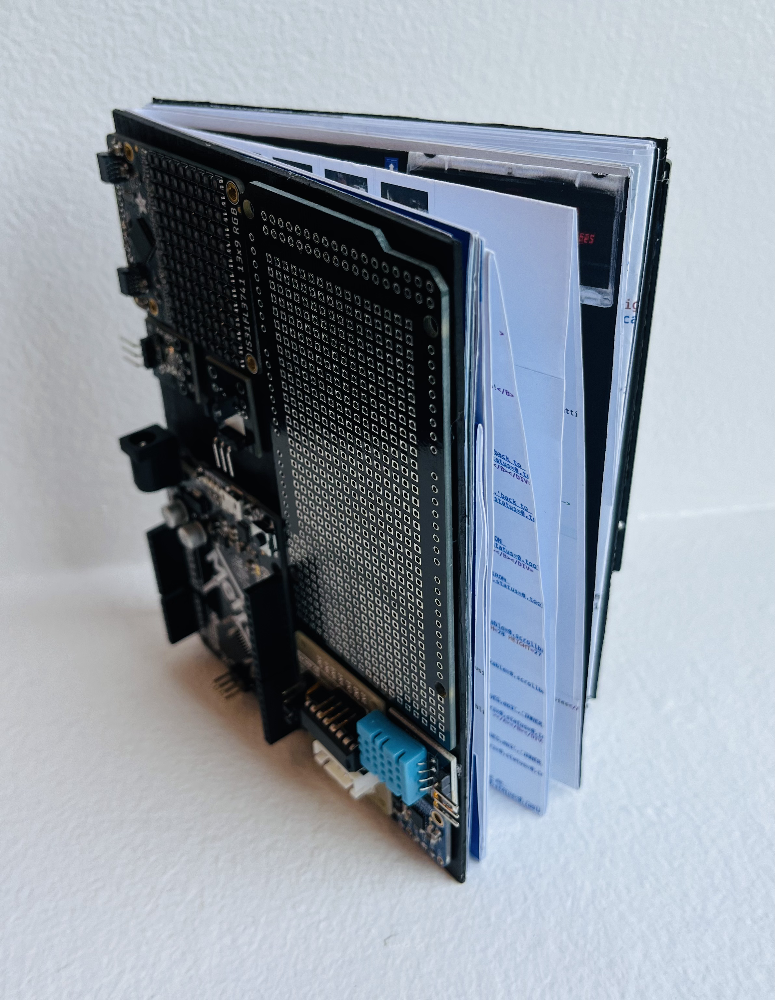
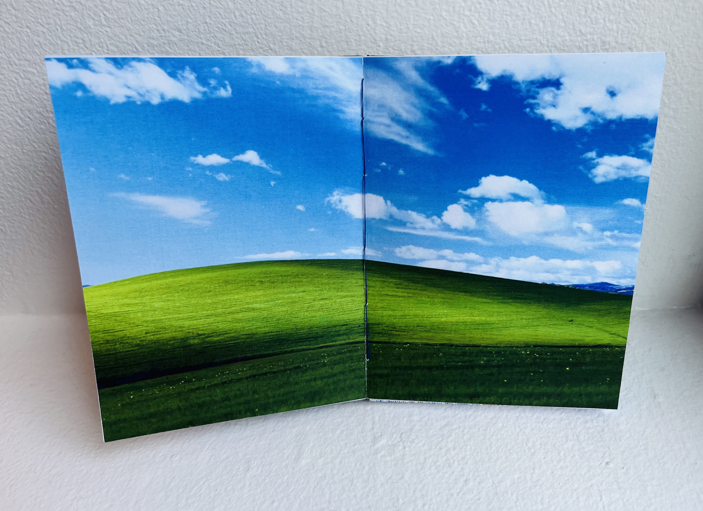
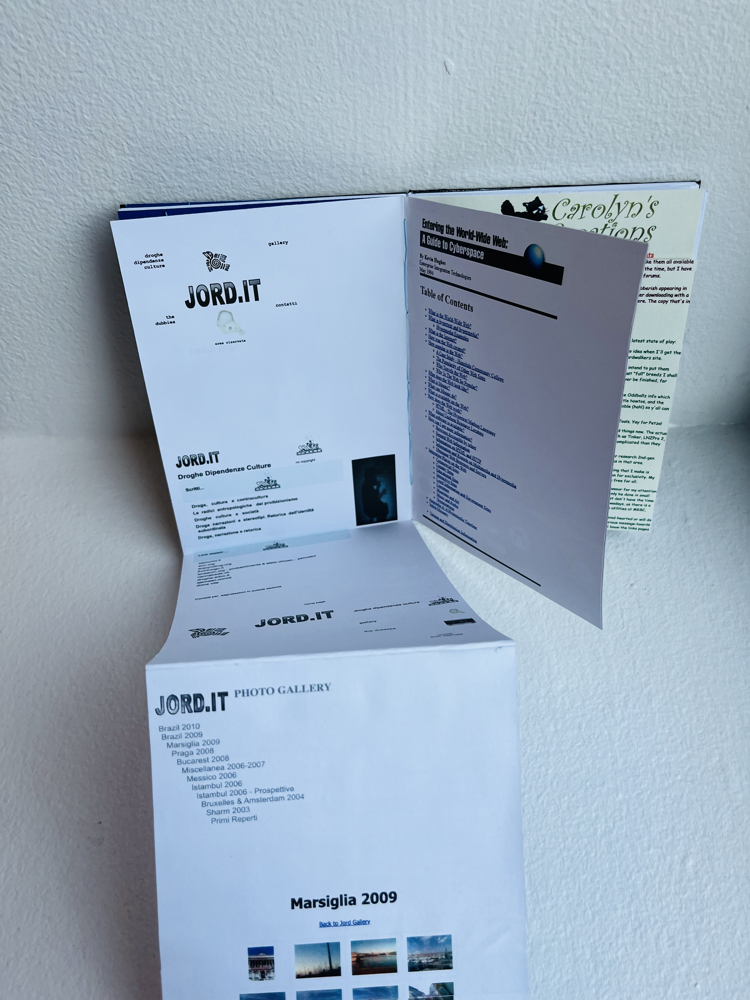
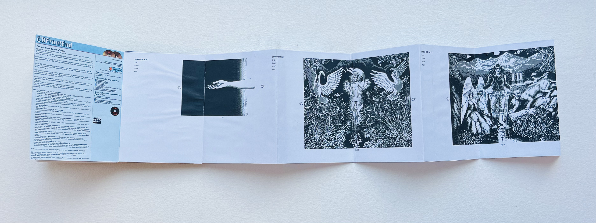

Book Design — Web History in Print
web archeology: a physical archive
A printed book tracing the progression from the chaotic, handcrafted early internet to today's standardized web — exploring how design, personality, and accessibility have shifted over time.
Most websites today are built from standardized templates that prioritize usability — clean, accessible, and efficient, but often uniform and impersonal. web archeology traces how we got here, and what we lost along the way. Early personal pages were hand-coded, idiosyncratic, and alive with the passions of their creators. Even when they appeared random or incoherent, they offered a compelling glimpse into another person's world.
The book begins as if the reader is "logging on" to a computer from the early internet era. As pages unfold, they encounter a mix of business and personal sites — mirroring the eclectic browsing experience of the late 1990s and early 2000s. Gradually, the book transitions into the modern internet, tracing how design conventions shifted toward streamlined, standardized forms.
"Early websites were hand-coded, full of quirks, and reflected the passions of their creators. Even when a site appeared random or incoherent, it offered a compelling glimpse into another person's world."
Design Approach
The physical design reinforces the book's narrative arc. Accordion-style spreads unfold both horizontally and vertically, mimicking the act of scrolling through a webpage. On the reverse side of each spread, the site's underlying code is printed — allowing the reader to "inspect" the page as one would in a browser. The cover incorporates Arduino and computer components, referencing the inner workings of the web and tying the physical object back to its digital inspiration.
Research
Source material was gathered from Wiby, the Wayback Machine, and the Web Design Museum — archives that helped recreate the experience of browsing across different eras of the web. Tracing dead links back to cached pages that haven't loaded in twenty years, the research process became its own kind of archaeology.
Book Photography




